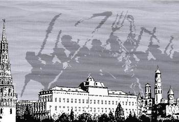

Bad News from Sept. 8 Election
For the liberal opposition in Russia, election day on Sept. 8 brought two pieces of bad news. The first was that the ruling United Russia party won in Moscow. The second was that the ruling United Russia party lost in Yekaterinburg and Krasnoyarsk.
The voting map by district shows why opposition leader Alexei Navalny's attempt to "change Moscow" was futile. He took the central districts of the city, where his core constituency — the creative class working in the new economy unrelated to the energy sectors — lives. Voters in the working-class satellite districts cast their ballots for the status quo.
Let's hope the Kremlin will heed the words of the opposition leaders who insist that Russia in the 21st century can’t be ruled by the same methods that the tsars or Stalin used.
Voting for the status quo in Moscow isn't a paradox — it has a rational basis. Moscow is an oasis of economic well-being in an otherwise poor Russia. Moscow lives off exploiting the natural resources of the rest of the country, particularly Siberia and the Urals. Almost half the state budget comes from oil and gas, which are extracted in regions far from Moscow, but all the energy companies are based in the capital and pay their taxes there. Moreover, the current tax system allows Moscow to pump almost two-thirds of the regions' income into the center. The state returns only a part of that back to the regions, and even then in proportion to the regions' political loyalty.
This system has left the Russian regions in dire economic straits. Unemployment is pandemic. A monthly salary of 15,000 rubles ($460) is considered good, and doctors and teachers, who get their salaries from the local budgets, often earn even less. Meanwhile, regions are falling into poverty. The number of individual entrepreneurs with small businesses fell by more than 50 percent outside Moscow in the last year according to a report in Vedomosti, while the number in the capital remained unchanged.
Navalny's platform proposed changing the traditional structure of the Moscow economy. It would have put a stop to using the semi-slave labor of illegal migrant workers and instead would have given that work to people from other Russian cities. The proposal caused Navalny trouble with Muscovites and gave him the image of a nationalist who was an enemy of migrant workers.
Now if you want to know what a real nationalist sounds like, you should listen to Anatoly Bykov in Krasnoyarsk. Bykov cannot take part in politics himself because he was convicted of an attempted murder. But everyone knows that he is the real head of the local branch of the obscure Patriots of Russia party, which won the city council elections.